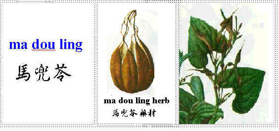

|
Complementary and
Alternative Healing
University
|
|
ma dou ling  Pharmaceutical name: Fructus aristolochia Biological name: Aristolochia debilis Sieb et Zucc; Aristolochia sinarum linde.;Aristolochia contopta Bge Pronounced in Japanese: ba to rei Pronounced in Korean: ma du ryong Pronounced in Cantonese: ma to ling
Common Name: birthwort fruit (closest species) Distribution: Hao Zhou of An Hui, Henan, Shandong, Hebei, Jiangxi, Shanxi, Shaanxi, Jiangsu and Zhejiang . Characteristics and channel (meridian) relation: Bitter in taste. A little spicy. Fruits, ma dou ling are cold but the roots which are called tu qing mu xiang are warm. Normal dosage is not toxic but long term usage with larger amount can be toxic. Related to channels: lung and large intestine channels. Chemical ingredients: aristolochic acid, aristolochine C32H32N2O18 , magnoflorine Usage: in coughs, phlegms, wheezing, with lung heat, hypertension with yinxu and light headedness, bleeding hemorrhoids. Cautions: do not use in cough due to cold and deficiency or weakness, and do not use in diarrhea due to pixu (spleen deficiency). Long term usage or large dosage can damage the kidneys. Medical Functions: Bronchodilatory effect and counter bronchospastic effect of pilocarpine, acetylcholine, and histamine. Inhibitory effect (in culture) against Staphylococcus aureus. Mild counter hypertension effect.
|